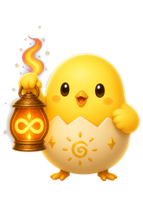
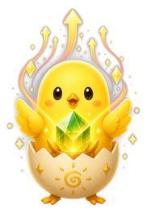
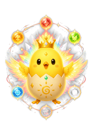

ご指定どおり、左の「ストーリー」を削除し、その分も含めて帯の全幅をコレクションに使う形にしました。横幅が広がったので8体すべてが折り返しなしで並びます。
左の青いストーリー枠が場所を取り、コレクションは右の狭いスペースだけ。サムネが小さく横スクロール前提だった。
ストーリー枠を消し、帯いっぱいに8体を表示。集めた体数（5/8体）が大きく見え、未解放（点線・？）が「あと何体」かも分かる。タップで名鑑へ。



全部集まると全マスがカラーに。達成感が出ます（参考表示）。
※ 体数・解放状況はすべてサンプルです。実際は各ユーザーの進行に合わせて変わります。
※ 左のストーリー変更ボタンは削除済み。100到達後のストーリー変更が必要なら、装備タブ側に入口を置く形にできます。